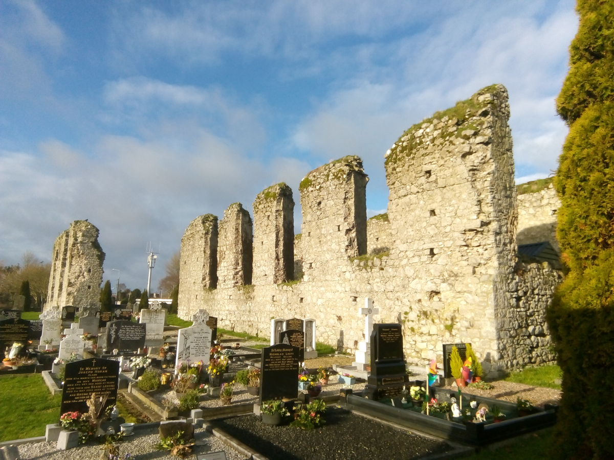

The Franciscan Friary
The following extract is taken from "The Shady Roads to Clane", by Hermann Geisel and Roger Horgan.
The term friary is derived from the French, where Brothers are called freres. The similarity between the
words
friary and priory is purely accidental, but both are frequently applied in reference to an of one of the
Mendicant Orders.
The Franciscans are also referred to as Grey Friars or Friars Minor.
A priory was a
monastery headed by a prior meaning before. He was a primus inter pares('first among equals'), while an
abbot ('father') had become a very powerful and authoritative head of a monastic establishment.

The ruins of the thirteenth century Franciscan Friary in Clane are well concealed beneath the ivy (which has since been cleared - Ed.) and hidden away behind the trees in the Abbey Cemetery. According to the Annals of the Four Masters, it was built in 1258. The founder was Sir Gerald FitzMaurice (of the Geraldines), second Lord of Offaly.
A General Chapter of the Order was held here in 1345. Records show that the Franciscans kept their connections with Clane until well into the eighteenth century, though the medieval monastery was in ruins by this time.
The ruins of the thirteenth century Franciscan Friary in Clane are well concealed beneath the ivy (which has since been cleared - Ed.) and hidden away behind the trees in the Abbey Cemetery. According to the Annals of the Four Masters, it was built in 1258. The founder was Sir Gerald FitzMaurice (of the Geraldines), second Lord of Offaly.
At a later
stage,
the Wogans came into the patronage of the priory and estate. For all its present lack of pretension,
this
Franciscan establishment must have played an important role in the everyday life of Clane.
A General Chapter of the Order was held here in 1345. Records show that the Franciscans kept their connections with Clane until well into the eighteenth century, though the medieval monastery was in ruins by this time.
In Clane, the foundation of the Franciscan Friary meant an end of the old monastery, the monks
presumably
absorbed into the new religious community. The town from now on was very much a service institution for
the
new monastery.
The Friary flourished until the dissolution in 1540, when Henry VIII abolished all
monastic
institutions and granted the lands to his barons, first to David Sutton in 1541 and then, forever,
to
Robert
Eustace, John Trevor, Richard Field, Robert Roche and Edward Browne at a yearly rent of 2s. 6d.
(About
£250
in today's currency).
Still, the Friars of the Franciscan Orders and other Mendicant Orders remained
active
throughout the Penal times and were a strong force in the struggle between landlord and tenant, rich
and
poor, Protestant and Catholic, English and Irish. They provided the people with spiritual guidance,
educational and moral support when and wherever it was needed.
The Friary was not a particularly wealthy one. It possessed a church, cemetery, chapter house,
dormitory,
store, kitchen, two chambers, a stable, an orchard and about seventy acres of land. According to the
files
of the Office of Public works, the Friary had to be rebuilt after 1433. The chapel, church and part
of
the
dormitory were later destroyed and the stones used to repair the 'King's
castle in Maynouthe'.
There is still part of a statue in the Abbey, a limestone torso with its upper chest and legs
missing.
It is
believed to represent the founder, Gerald FitzMaurice FitzGerald, who died in 1287.